Al-Riyada College for Health Sciences · Medical HRMS
User Guide
How employees, HR staff and managers use Medical HRMS every day, how HR keeps the Ministry (Jameah) data complete, and how testers check that it works.
ForEmployees · HR officers and the HR Manager · managers and leave approvers · Academic Affairs · the testing team.CoversEmployee Portal, HR Portal, leave, requests, recruitment, Ministry (Jameah) data, Academic Presence, user acceptance testing.Version23 October 2026Built byAbdul Hakeem (Medical HRMS and Jameah lead)See alsoInstallation and Setup Guide (server installation and first-time setup).
Contents
Getting started
Logging in
The portal screen
Arabic and English
Employees: the Employee Portal
Your dashboard
My Leave
Planning leave
Applying for leave
Coming back from leave
Sick leave
Other requests
Your requests and their status
HR: the HR Portal
Dashboard
Processing a request
Request steps
HR: leave
Leave applications
Leave plans
Leave returns
Leave section and yearly setup
Starting a sick leave year
HR: recruitment
Create an application link
What the applicant does
Review and hire
HR: employee records and Ministry data
HR: academic presence
Ministry (Jameah) pages
Managers and approvers
Testing the system
Questions and answers
1Getting started
1.1 Logging in
Open the college system in your browser and log in with your college e-mail and password. The system takes you to your own page:
You are
You land on
HR Manager or HR officer
The HR Portal (/app/hr-dashboard)
Employee
The Employee Portal (/app/employee-dashboard)
Instructor, Head of Department, advisor
Your own college portal, as before. If you also have an Employee record you can open the Employee Portal for your requests and leave.
Figure 1. The login page.
1.2 The portal screen
Both portals look the same. On the left is the menu, grouped in sections; at the top, the breadcrumb (where you are), the EN / AR language switch, dark mode, notifications and your account menu (My Profile, My Settings, Log out). Collapse menu at the bottom gives more room. On a phone the menu opens from the menu button at the top.
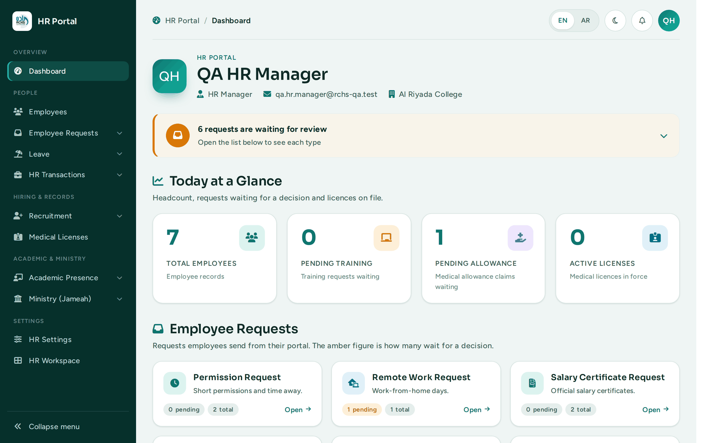
Figure 2. The HR Portal. The menu only shows pages you are allowed to open.
1.3 Arabic and English
Click AR or EN at the top. The page reloads in that language and remembers your choice; Arabic pages read right to left.
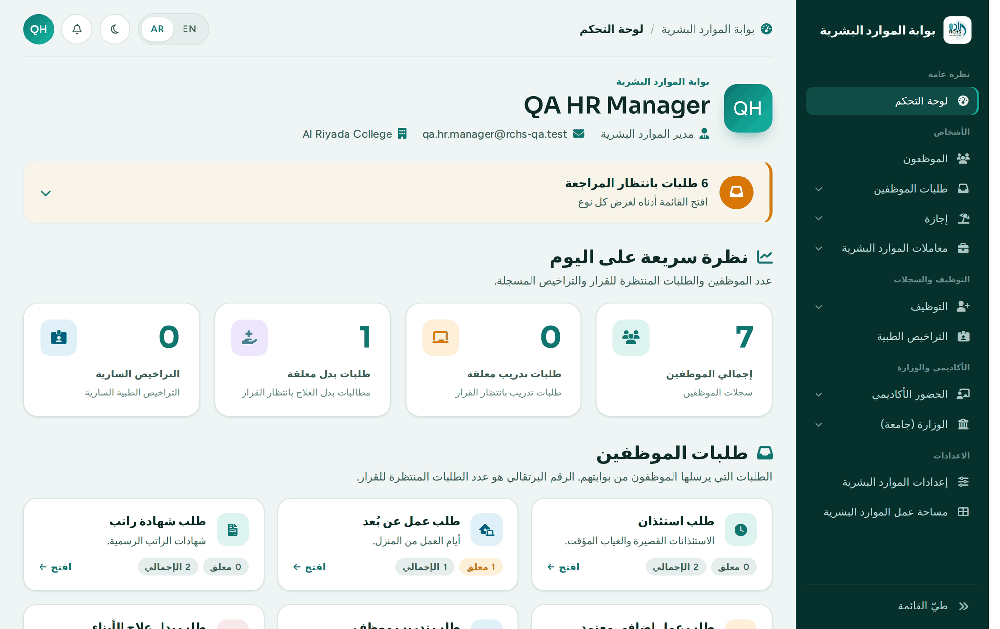
Figure 3. The HR Portal in Arabic.
2Employees: the Employee Portal
2.1 Your dashboard
At the top are your name, department, designation and Employee ID, then a reminder of anything waiting for a decision, and four counters: My Requests, Pending, Approved and Leave Applications.
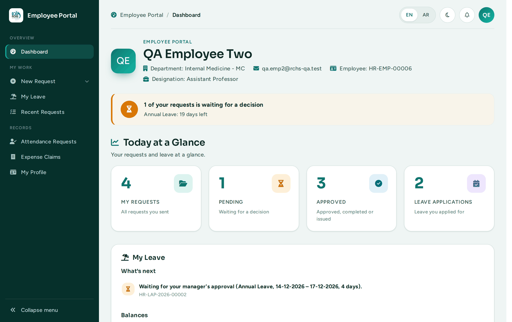
Figure 4. The Employee Portal.
2.2 My Leave
The My Leave panel tells you what to do next and how much leave you have.
What's next: for example a leave waiting for your manager, a planned leave you can now apply for (Apply now), or a leave that ended and needs a return (Send Leave Return).
Balances: for each leave type, the days Allocated, Taken, Waiting for approval and Left.
This month's limits: half-day leave and work-from-home days used this month, if HR switched these limits on.
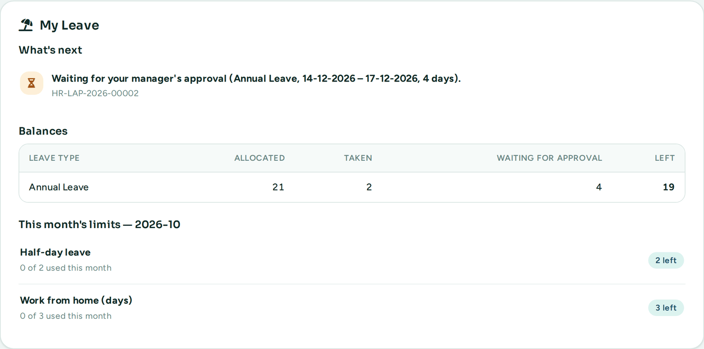
Figure 5. My Leave.
Leave follows one flow, and the three leave cards come first on your dashboard in that order:
Figure 6. The request cards. New Request opens the form; "N request(s)" lists the ones you sent.
2.3 Planning leave (Leave Plan)
Click Leave Plan → New Request.
Choose the leave type and the dates you plan to take, add a note if you like, and click Send Request.
Your manager and then your department head approve the plan. A plan does not use your balance.
When the time comes, My Leave shows "Plan approved"; click Apply now. The leave application opens with the plan's dates filled in.
Figure 7. Leave Plan.
2.4 Applying for leave (Leave Application)
Click Leave Application → New Request (or Apply now on an approved plan).
Pick the Leave Type. Only leave you hold is listed, with the days you have left, for example Annual Leave (21 days left). Leave Without Pay is last: agree it with HR first.
Enter the dates (tick Half Day for half a day) and the reason, then Send Request.
Your leave approver approves it and HR is informed. You see the result in My Leave and in your requests.
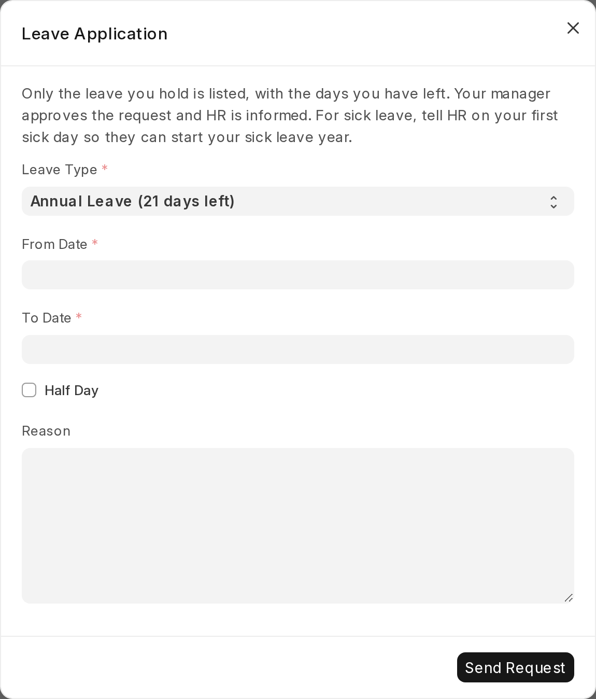
Figure 8. Leave Application. The days count working days only; holidays in the holiday list are not counted.
2.5 Coming back from leave (Leave Return)
When a leave has ended, My Leave shows "Your leave ended on …"; click Send Leave Return (or Leave Return → New Request).
The leave and the expected return day (the day after the leave) are filled in. Enter the day you actually came back.
After sick leave, attach your fitness certificate. It is not asked for after other leave.
Click Send Request. HR completes the return; after sick leave, occupational health clears you first.
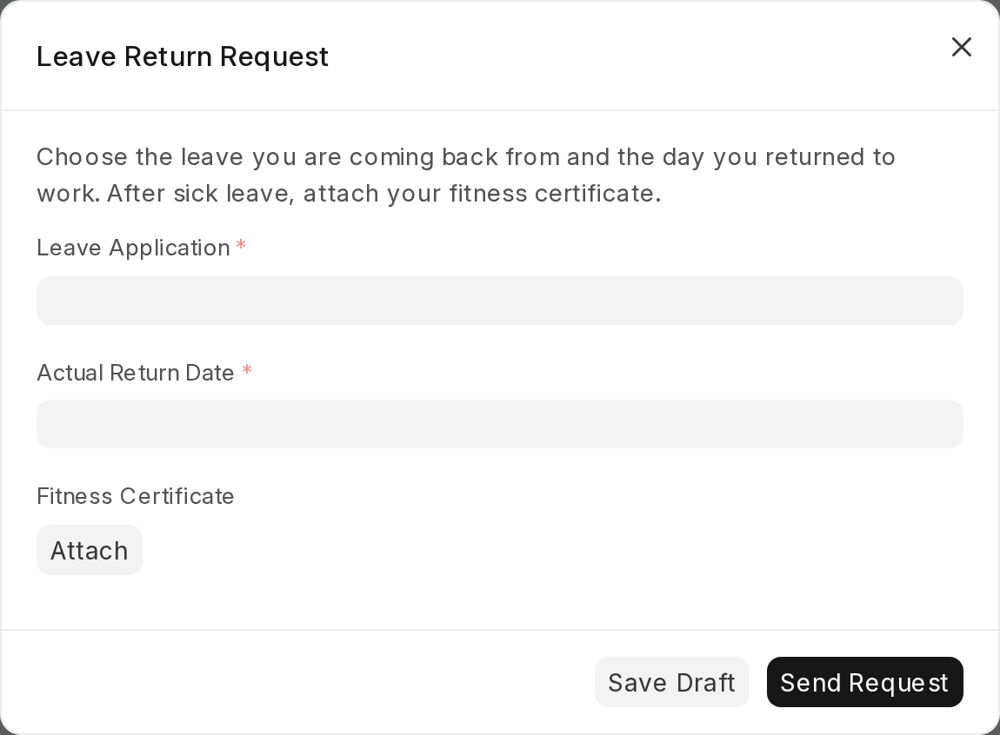
Figure 9. Leave Return. Only your approved leave can be chosen, and each leave has one return.
2.6 Sick leave
Tell HR on your first sick daySick leave has its own year, which HR starts on your first sick day. It is used in order: Sick Leave 1 (30 days, full pay), then Sick Leave 2 (60 days, 75% pay), then Sick Leave 3 (30 days, unpaid). A request that crosses from one stage to the next must be split in two.
2.7 Other requests
Card
Use it to
Steps after you send it
Permission Request
Short permission or time away on one day (from / to time; the hours are counted for you).
Pending → Approved
Remote Work
Work from home on given dates, with a work plan (the working days are counted for you).
Manager → Department Head → Approved
Salary Certificate
An official salary certificate (purpose, addressee, language).
Manager → HR → Issued
Overtime
Pre-approval of overtime hours.
Manager → Department Head → Approved
Training
Professional training (course, provider, cost).
Manager → Department Head → HR → Finance → Approved
Medical Allowance
A child medical allowance claim, with the invoice.
HR Review → HR Director → Finance → Approved
Company Car
A company vehicle.
Manager → Department Head → HR → Finance → Approved
Update My Data
A correction to your personal record (for example address, phone).
Manager acknowledgement → HR verification → IT updated → Completed
For Permission Request choose the hour, the minutes and AM / PM for both times; a time without minutes or AM / PM is refused.
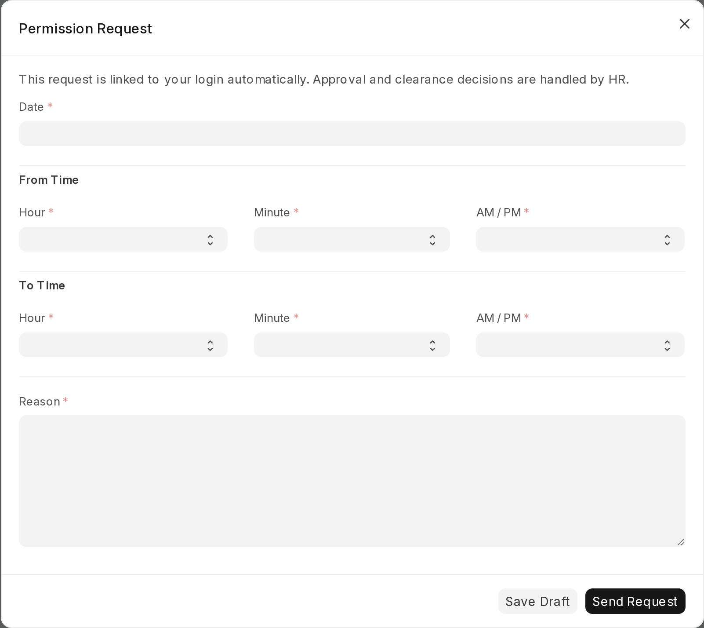
Figure 10. Permission Request with the time pickers.
Save Draft or SendSave Draft keeps the request for later and nobody sees it yet; Send Request sends it for review. A sent request can no longer be changed by you; ask HR if something is wrong.
2.8 Your requests and their status
Click N request(s) on a card to see the requests of that type, then View to see what you entered and the current status. Recent Requests in the menu lists your latest requests of every type.
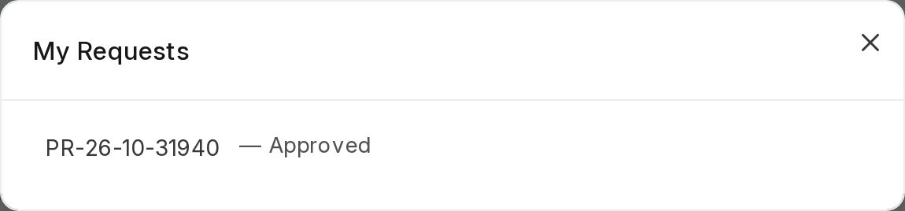
Figure 11. My Requests.
Your data is privateYou only ever see your own requests, records and files. You cannot approve your own requests or leave, and Contract Renewal is filed by HR.
3HR: the HR Portal
3.1 Dashboard
The HR Portal opens with how many requests wait for review, Today at a Glance (employees, pending training, pending allowance, active licences) and one card per request type. The amber figure on a card is how many wait for a decision; Open opens the list.
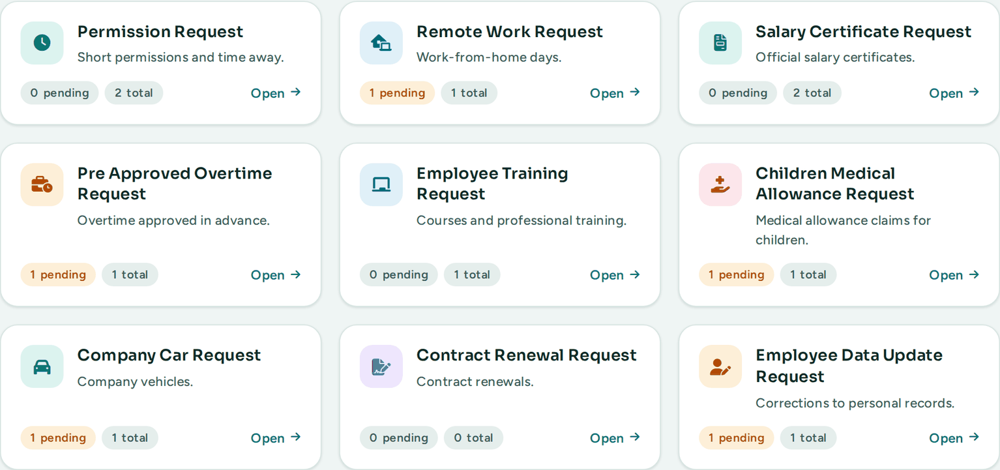
Figure 12. Employee Requests on the HR Portal.
The menu groups everything HR uses: People (Employees, Employee Requests, Leave, HR Transactions), Hiring & Records (Recruitment, Medical Licenses), Academic & Ministry (Academic Presence, Ministry (Jameah)) and Settings.
3.2 Processing a request
On the HR Portal click Open on the request card (or use the menu). Filter the list on Status to see what waits.
Open the request and check the details and any attachment.
Change Status to the next step once that person has agreed (for example Pending Manager → Pending Dept Head), or to Approved / Issued, or Rejected. Click Save.
The employee sees the new status on their portal straight away.
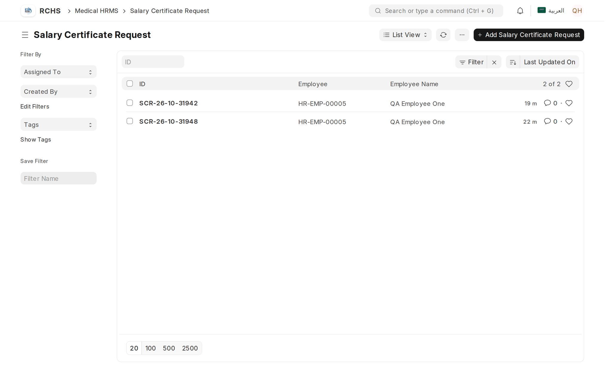
Figure 13. A request list (Salary Certificate Request).
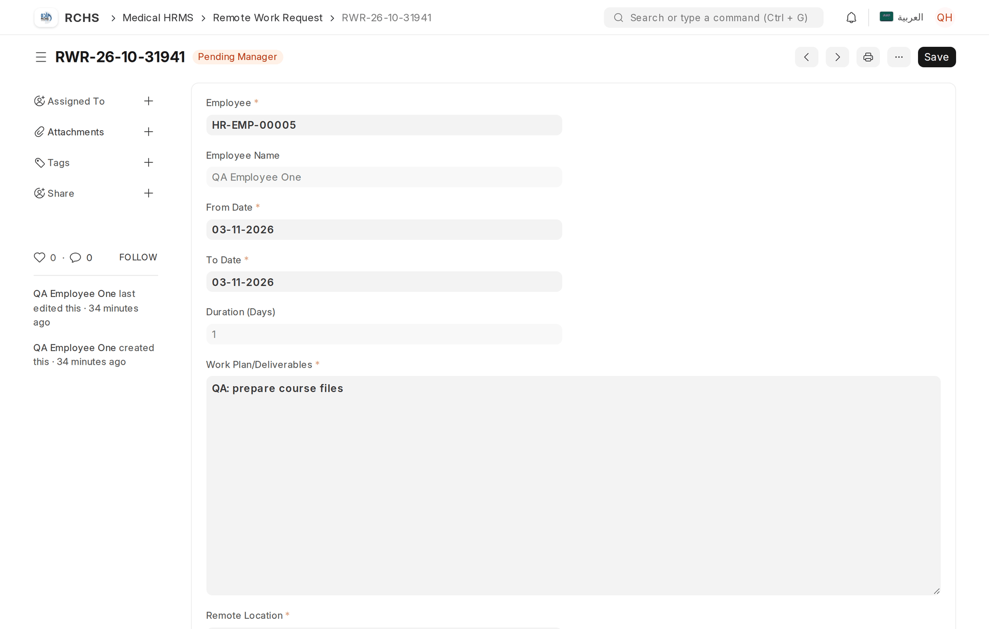
Figure 14. A request form (a Remote Work Request at Pending Manager). HR moves the Status from step to step. Duration is counted by the system.
Approval steps todayHR records each step in the Status after the manager, department head or Finance has agreed. Amount limits are checked when a request is approved (training above 10,000 needs a Department Head, above 30,000 the HR Manager, above 50,000 Finance; expense claims above 5,000 a Department Head, above 20,000 Finance; travel above 15,000 a Department Head, above 50,000 Finance; company cars always Finance).
The employee's leave approver (or HR) decides each application:
Open the Leave Application (HR Portal → Leave → Leave applications waiting).
Set Status to Approved or Rejected and click Save.
Click Submit and confirm. Only a submitted, approved leave is taken from the balance.
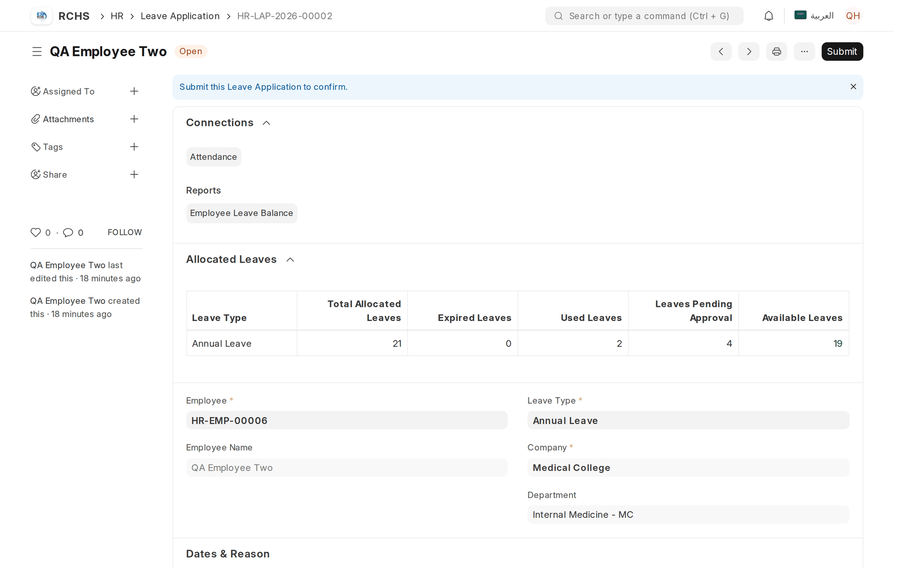
Figure 15. A Leave Application waiting for the approver.
4.2 Leave plans
Move the Status from Pending Manager to Pending Dept Head to Approved (or Rejected) and save. An approved plan says that the employee applies from the Employee Portal (Apply now); once they do, Applied As links the leave application, and Open Leave Application opens it.
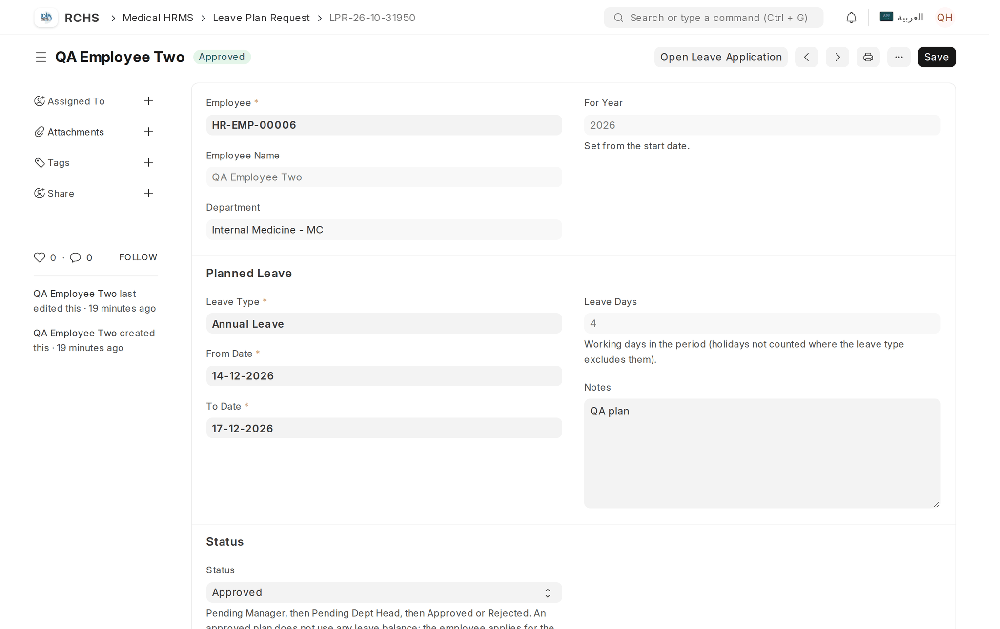
Figure 16. A Leave Plan Request. Leave Days counts working days.
4.3 Leave returns
Pending HR Review: check the return date. Days Late is counted from Expected Back On (the day after the leave).
Pending Manager Readiness: the manager confirms the employee is back at work.
After sick leave only: Pending Occupational Health. Check the fitness certificate and record the Occupational Health Clearance (Cleared for Full Duty, Cleared for Modified Duty or Not Cleared).
Completed. After sick leave this needs a clearance "Cleared for Full Duty" or "Cleared for Modified Duty".
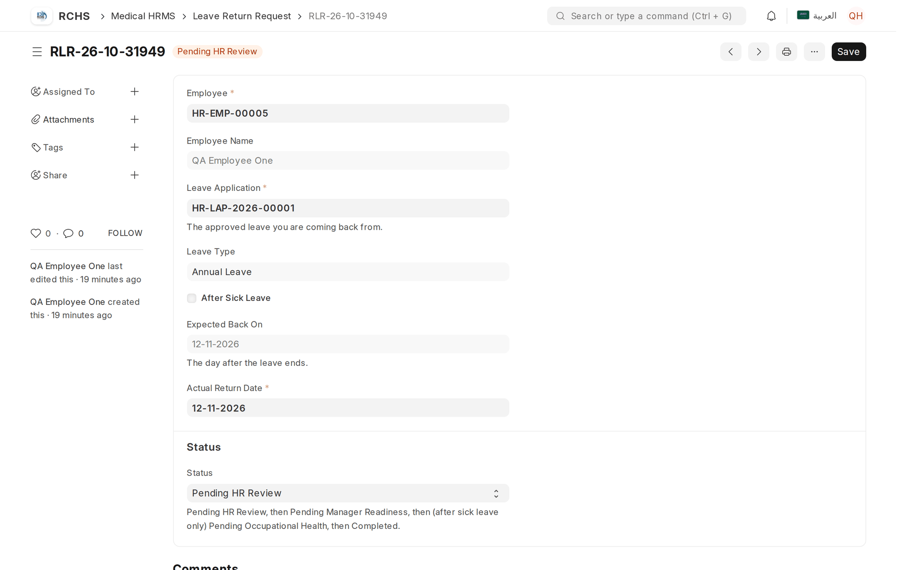
Figure 17. A Leave Return Request (after annual leave: no fitness clearance section).
4.4 Leave section and yearly setup
HR Portal → Leave has three parts:
Leave setup check per company: active leave period, holiday list, leave approvers and annual leave for every employee. Orange lines have a Fix link.
Daily leave work: applications waiting, plans waiting, returns to complete and who is on leave today. Each count opens its list.
Yearly setup, in this order: Leave Period, Holiday List, Leave Policy, Leave Control Panel, Leave Approvers, Monthly Limits. Do this at the start of every leave year (details in the Installation and Setup Guide, section 6.3).
Figure 18. HR Portal → Leave.
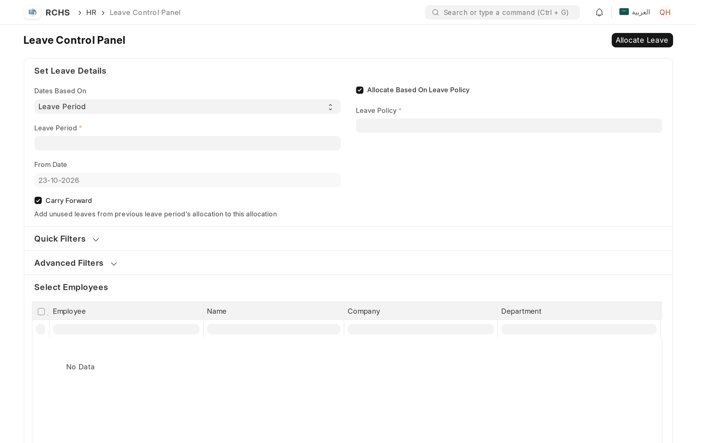
Figure 19. Leave Control Panel: assign the annual leave policy to many employees at once.
4.5 Starting a sick leave year
HR Manager only. When an employee reports their first sick day: HR Portal → Leave → Start Sick Leave Year, choose the employee and the First Sick Day, confirm. The employee then has Sick Leave 1 and 2 for one year from that day; annual leave is not touched.
Figure 20. Start Sick Leave Year.
5HR: recruitment
Application link→applicant fills the form→HR reviews→Accept→Create Employee
Choose the Application Category (Academic Staff, or Non-Academic / Other Staff), the Role to hire for (only hireable roles are offered) and the dates it is valid. Save.
Click Generate Link and send the link to the applicant. Each link only works within its dates.
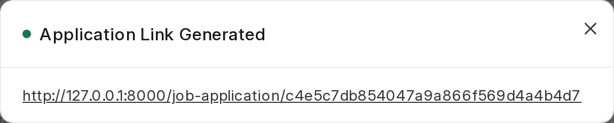
Figure 21. The generated application link (here from the test site; on the live server it starts with the college system's own address).
5.2 What the applicant does
The applicant opens the link (no login needed) and fills the form step by step, with Next and Back. The progress is saved on their device.
Names in English use English letters only; names in Arabic use Arabic letters only.
Identity Type and Identity Number are required, following the Ministry rules (national ID 10 digits starting with 1 for Saudis, Iqama 10 digits starting with 2).
Phone numbers have a country code picker (Saudi Arabia first).
Academic applicants add their qualifications and academic experience.
On the last step they review everything, tick the confirmation and click Submit Application. They get a reference number and can download a PDF receipt.
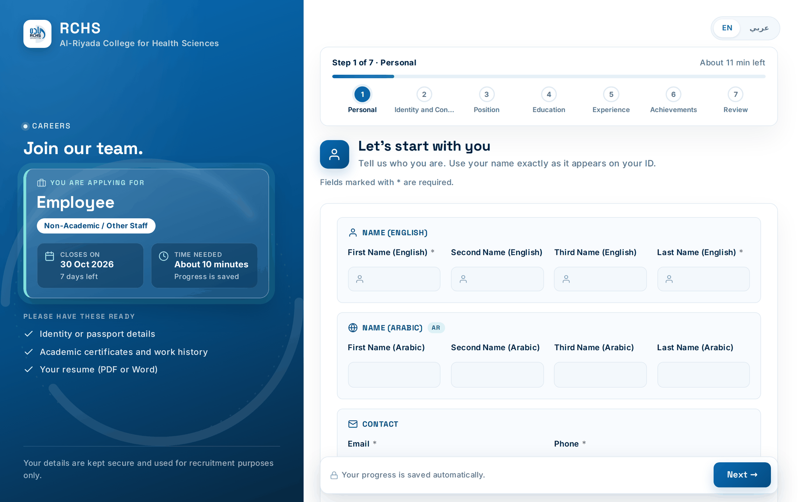
Figure 22. The application form, first step.
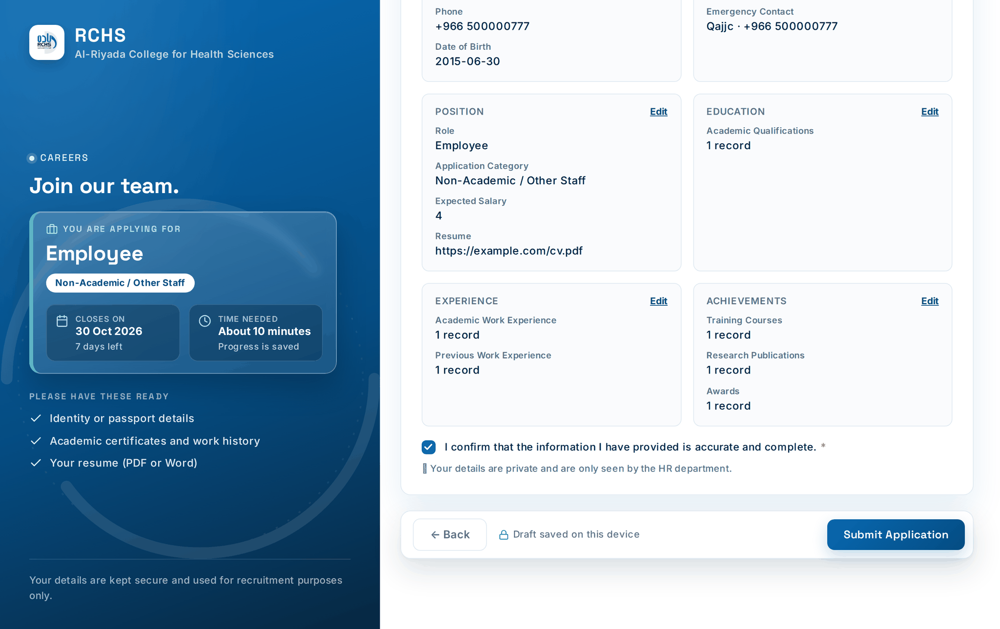
Figure 23. The review step before sending.
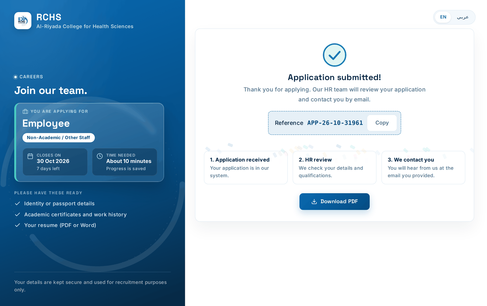
Figure 24. Application sent: reference number and receipt.
5.3 Review and hire
HR Portal → Recruitment → Employee Job Applicant. Open an application (Pending) and review it.
Click Accept (or Reject).
Click Create Employee. The dialog asks for what the Employee record needs and the form did not ask: Academic Department, City, Geographical Work Location, Job Rank (and Gender / Date of Birth if missing), the Education Department for academic records, and the e-mail to use.
For academic hires use the official college e-mail (@alriyada.edu.sa) as Company Email; a personal e-mail is refused before anything is created.
Click Create Employee. The system creates the Employee, the login, and for academic roles the Instructor, Academic Advisor or Head of Department record. The applicant's answers and qualifications are copied over.
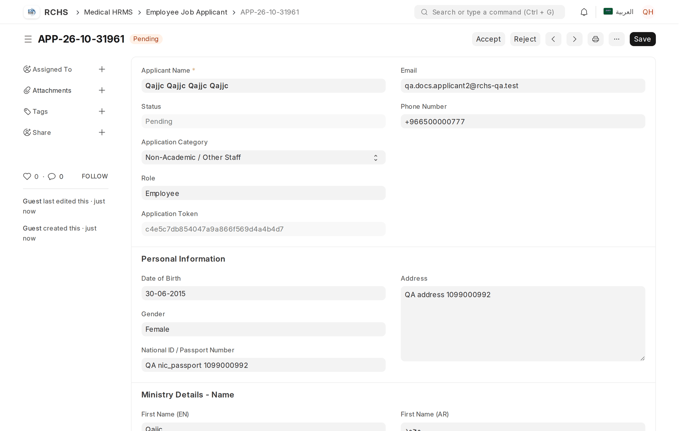
Figure 25. Employee Job Applicant with Accept / Reject.
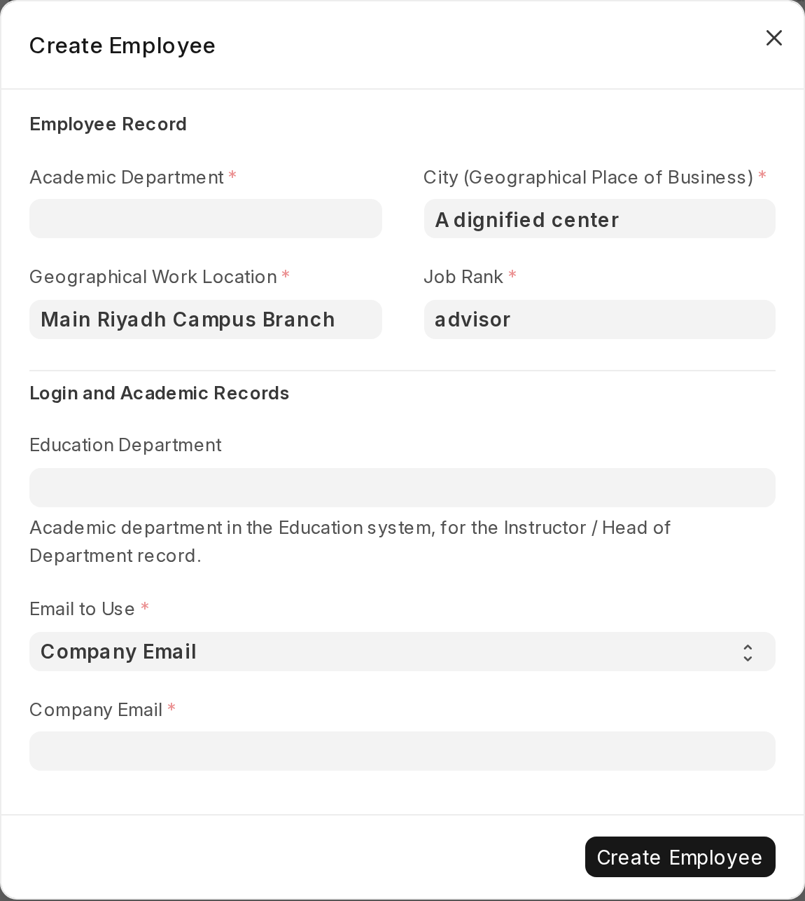
Figure 26. Create Employee.
6HR: employee records and Ministry data
The Employee form has the Ministry (Jameah) fields: names in Arabic and English, identity, nationality, work city, job rank, qualifications, experience, certificates and awards. Most are Ministry lists; pick a value from the list.
The Ministry identity rules are checked on save (national ID / Iqama format, no duplicate identity number).
View → Ministry (Jameah) Data on the Employee form shows exactly what is sent to the Ministry for that employee.
Teaching staff (with an Instructor record) are sent as Faculty, not as Employees.
Employees Missing Ministry Data (HR Manager)
HR Portal → Ministry (Jameah) → Employees Missing Ministry Data lists each employee with the Ministry-mandatory values still empty, named as on the Employee form. To complete many at once:
Download Data Sheet: Excel with the current values; red cells are mandatory and empty; Ministry lists are dropdowns.
Fill in the sheet. Do not change the grey columns.
Check / Import Data Sheet → Check (nothing is saved): read the result sheet.
When it is clean: Import.
Figure 27. Employees Missing Ministry Data.
7HR: academic presence
HR Portal → Academic Presence answers four questions from the published class timetables, exam committees and recorded attendance:
Tab
Shows
Faculty Schedules
Every teaching session by faculty member, room and mode, for the dates chosen.
Proctor Schedules
Exam proctoring duties by date, time and room, from the exam committees. Empty until the exam committees and their proctors are entered.
Students on Campus
For one day: students expected, present and absent in each hour (7:00 to 22:00), from the class lists and the attendance teachers record.
Faculty After 4 PM
For each day, faculty on campus after the cut-off time (HR Settings, 4:00 PM unless changed), teaching or proctoring, with where the record comes from. Until attendance devices are connected, the times come from the timetable and class attendance.
Refresh reloads the figures; Export (Excel CSV) downloads the current tab. When HR has set an Academic Holiday List (HR Settings), its days are left out.
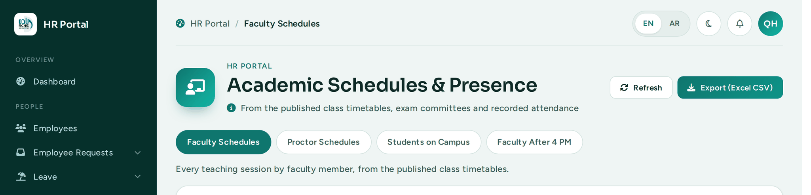
Figure 28. Academic Schedules & Presence.
8Ministry (Jameah) pages
For HR and Academic Affairs (Education Manager role). The Ministry's Jameah agent reads the college data from 23 views; these pages show what is sent and what is missing.
Jameah Data Check: invalid codes (must be 0), values waiting for a Ministry code, settings not filled, mandatory columns with gaps, and problems in the source records. Refresh Academic Figures updates GPA and credit hours now (they also refresh every hour).
Code Map: links college values to official Ministry codes. Open a row Needs Review, pick the code, set Verified.
Jameah Settings: institution values (college code, study location city, study types, programme duration). Empty settings are sent empty.
Figure 29. Jameah Data Check.Figure 30. Jameah Code Map.
9Managers and approvers
Leave approvers open the employee's Leave Application, set Approved or Rejected, save and submit (section 4.1). Who approves whom is set on the Department or the Employee record.
Managers and department heads agree requests and leave plans; HR records each step in the request's Status (sections 3.2 and 4.2).
Department Heads and Finance approve amounts above their limits (section 3.2).
After an employee's return, the manager confirms readiness (Pending Manager Readiness, section 4.3).
You only see what your role allowsApprovers see the requests they act on; employees never see each other's requests or files.
10Testing the system
For the testing team and HR during user acceptance testing (UAT). Always test on the test site, never on the live server.
10.1 What you need
The Test Cases workbook (project_tracking/Medical_HRMS_Jameah_Test_Cases.xlsx): every case with its steps and expected result.
Test logins for each role. The Test Accounts sheet in the workbook lists which roles you need; ask the developer for the logins.
A browser (Chrome, Edge or Firefox) and, for phone checks, a phone or a narrow browser window.
10.2 How to run a test case
Pick a case (filter on Module or Priority; do Critical and High first).
Log in with the role in Login / role, check the Preconditions, follow the Steps with the Test data.
Compare with the Expected result. Set Result to Pass, Fail, Blocked or N/A, and fill Tested by, Test date and Actual result / notes.
For a Fail, add a row in the Bug Report sheet and put its Bug ID in the test case.
The column Last automated run shows the developer's own result for the same check. Test the case anyway: something can pass there and still fail for you.
10.3 Reporting a bug
In the Bug Report sheet, one row per bug:
Column
What to write
Date & time seen
When it happened (the developer finds it in the Error Log by this time).
Login (user), Role
Who was logged in.
Page address (URL)
Copy it from the browser's address bar.
What you were doing (steps)
The steps to make it happen again.
Exact error message
Copy the text of the red message or pop-up.
Screenshot file name
Take a screenshot and name it after the Bug ID.
Severity, TC ID
How bad it is (Critical, High, Medium, Low) and the test case.
10.4 A quick check per role
Role
Check at least
Employee
Lands on the Employee Portal; sends a Permission Request and a Leave Application; sees only their own requests; sends a Leave Return after a leave.
Leave approver
Approves and submits a leave; the employee's balance goes down.
HR officer
Lands on the HR Portal; every link opens; processes one request of each type; completes a leave return.
HR Manager
Starts a sick leave year; creates an application link, hires a test applicant; downloads and checks the staff data sheet.
Academic Affairs
Opens Jameah Data Check, Code Map and Jameah Settings.
Everyone
Switches to Arabic; uses the system on a phone; no red error anywhere.
11Questions and answers
Question
Answer
"No leave to apply for yet" when I open Leave Application.
HR has not assigned your annual leave for this year yet. Ask HR; they check the Leave setup check.
My leave type is not in the list.
Only leave you hold is listed. Sick leave appears once HR starts your sick leave year.
I sent a request with a mistake.
A sent request cannot be changed by you. Ask HR to reject it, then send a new one.
The number of leave days is lower than the calendar days.
Weekends and holidays in the holiday list are not counted.
The application link says it is not valid.
The link has expired or was switched off. Ask HR for a new link.
"College E-mail Needed" when creating an employee.
Academic hires need their @alriyada.edu.sa e-mail as Company Email.
A Ministry column is empty for an employee.
Use View → Ministry (Jameah) Data on the Employee, the Employees Missing Ministry Data report, or Jameah Data Check.
Pages are slow for a few minutes.
The Ministry academic figures refresh every hour; wait a few minutes.
I see a red error.
Take a screenshot, note the time and the page address, and report it (section 10.3).